Task 7 - Day 2 operation using GitLab CICD Pipeline
We will implement CI/CD pipeline for day 2 operation tasks in this section. GitLab and GitLab runner will be used for this purpose
- GitLab is software development platform that incorporates multiple capabilities including Version Control, code review and CI/CD in single system.
- The cloud hosted GitLab (SaaS) is used in this lab. VCS and CI/CD capabilities of GitLab will be used in this lab.
- To execute tasks in a private network (i.e. behind Firewall, private infrastructure), GitLab Runner is used.
- GitLab Runner is an application that run tests & results i.e., jobs in a pipeline and then send the results to GitLab. GitLab runner will be installed on the same local server as Ansible host in this lab setup.
As a Version Control System (VCS), a Git repository will created on the GitLab (SaaS). All the code (Ansible playbooks, roles etc.) will be saved on this repository. The centralized & Cloud hosted (SaaS) VCS provided by GitLab allows to maintain version control, track changes of files, collaboration among many engineers etc. In this lab, the CI/CD component of GitLab will be integrated with VCS, so that changes made on repository can automatically trigger execution of job via a pipeline file.
The process for creating a CI/CD pipeline with GitLab & GitLab runner include below procedure:
- Create a project in GitLab.
- Install and register the GitLab Runner for your project.
- Define a CI/CD job (steps, tests) in a file named
.gitlab-ci.ymlin the root of the repository. - Conditions/rules can be defined in
.gitlab-ci.ymlfile (YAML syntax) that will perform a job and display the results in GitLab pipeline e.g. When a commit to repository is done then the runner may execute the job and display the results in GitLab pipeline.
In this section, CI/CD pipeline for day 2 operation tasks will be implemented. Below steps will be performed:
- Create an Ansible playbook to verify underlay and overlay
- Version control for the EVPN Ansible playbooks using GitLab version control capabilities
- Create CI pipeline using GitLab
- Add new VNIs into existing fabric
- Verify CI pipeline in test and staging stages
- Commit the merger and verify CI Pipeline in production stage
Below picture gives an overview of the overall activities for this task i.e., multiple environments (testing, staging, production), CICD Pipeline using GitLab and Version Control System (VCS) capabilities using GitLab.
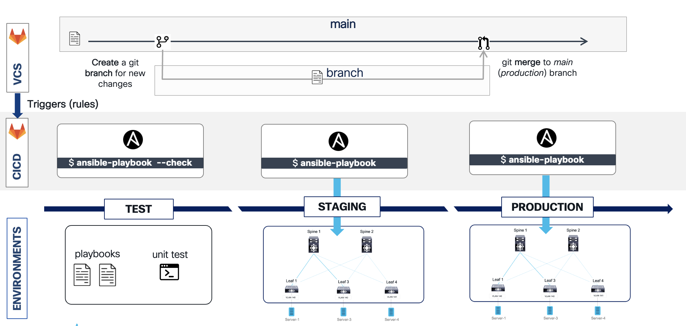
Step 1: Playbook to verify underlay and overlay
In this step, you will create the playbook to verify underlay and overlay operation. The playbook will be applied to all leaf switches to verify the below commands:
Underlay
- show ip ospf neighbor
- show ip bgp sum
- show ip pim neighbor
Overlay
- show nve vni
- show nve peer
- show ip route vrf Tenant-1
- show bgp l2vpn evpn
- show l2route evpn mac-ip all
- Switch to Atom. On the left page right click on the folder
EVPN-Ansibleand create a new playbook namedverify_fabric.yml. Enter this file name and hit enter. Then Copy and Paste the below content to this newly created file:
---
- hosts: leaf, jinja2_leaf
connection: local
gather_facts: false
tasks:
- name: verify underlay
register: underlay_output
cisco.nxos.nxos_command:
commands:
- show ip ospf neighbors
- show ip bgp sum
- show ip pim neighbor
tags: underlay
- debug: var=underlay_output.stdout_lines
tags: underlay
- set_fact:
savefile: "{{underlay_output.stdout_lines | to_nice_yaml}}"
- local_action: copy content="{{savefile}}" dest=./underlay.txt
- name: Verify Overlay
register: overlay_output
cisco.nxos.nxos_command:
commands:
- show nve vni
- show nve peer
- show ip route vrf Tenant-1
- show bgp l2vpn evpn
- show l2route evpn mac-ip all
tags: overlay
- debug: var=overlay_output.stdout_lines
tags: overlay
- set_fact:
savefile: "{{overlay_output.stdout_lines | to_nice_yaml}}"
- local_action: copy content="{{savefile}}" dest=./overlay.txt
-
Click
FileandSaveon Atom. This will save the playbook, and also scp the playbook to Ansible server using pre-configured “remote-sync” package. -
On the Ansible node (via MTPuTTy), run verify_fabric.yml playbook and verify the output for underlay by executing below command (using respective tag). This command will show ospf, bgp and pim neighbors for all leaf switches:
cd ~/EVPN-Ansible
ansible-playbook verify_fabric.yml --tags "underlay"
-
Below screenshot shows the partial output of above command and shows ospf, bgp and pim neighbors for all leaf switches:

Here is complete log of execution of above playbook/command:
root@ubuntu:~/EVPN-Ansible# ansible-playbook verify_fabric.yml --tags "underlay"
PLAY [leaf, jinja2_leaf] *********************************************************************************************************************************************************************************************
TASK [verify underlay] ***********************************************************************************************************************************************************************************************
ok: [198.18.4.101]
ok: [198.18.4.104]
ok: [198.18.4.103]
TASK [debug] *********************************************************************************************************************************************************************************************************
ok: [198.18.4.101] => {
"underlay_output.stdout_lines": [
[
"OSPF Process ID 1 VRF default",
" Total number of neighbors: 2",
" Neighbor ID Pri State Up Time Address Interface",
" 192.168.0.6 1 FULL/ - 01:27:12 10.0.0.21 Eth1/1 ",
" 192.168.0.7 1 FULL/ - 01:27:12 10.0.128.5 Eth1/2"
],
[
"BGP summary information for VRF default, address family IPv4 Unicast",
"BGP router identifier 192.168.0.8, local AS number 65000",
"BGP table version is 6, IPv4 Unicast config peers 2, capable peers 2",
"0 network entries and 0 paths using 0 bytes of memory",
"BGP attribute entries [0/0], BGP AS path entries [0/0]",
"BGP community entries [0/0], BGP clusterlist entries [4/16]",
"",
"Neighbor V AS MsgRcvd MsgSent TblVer InQ OutQ Up/Down State/PfxRcd",
"192.168.0.6 4 65000 161 106 6 0 0 01:23:17 0 ",
"192.168.0.7 4 65000 161 106 6 0 0 01:23:15 0"
],
[
"PIM Neighbor Status for VRF \"default\"",
"Neighbor Interface Uptime Expires DR Bidir- BFD ECMP Redirect",
" Priority Capable State Capable",
"10.0.0.21 Ethernet1/1 01:23:08 00:01:35 1 yes n/a no",
"10.0.128.5 Ethernet1/2 01:23:07 00:01:31 1 yes n/a no"
]
]
}
ok: [198.18.4.104] => {
"underlay_output.stdout_lines": [
[
"OSPF Process ID 1 VRF default",
" Total number of neighbors: 2",
" Neighbor ID Pri State Up Time Address Interface",
" 192.168.0.6 1 FULL/ - 1d04h 10.0.128.1 Eth1/1 ",
" 192.168.0.7 1 FULL/ - 1d04h 10.0.128.17 Eth1/2"
],
[
"BGP summary information for VRF default, address family IPv4 Unicast",
"BGP router identifier 192.168.0.11, local AS number 65000",
"BGP table version is 5, IPv4 Unicast config peers 2, capable peers 2",
"0 network entries and 0 paths using 0 bytes of memory",
"BGP attribute entries [0/0], BGP AS path entries [0/0]",
"BGP community entries [0/0], BGP clusterlist entries [4/16]",
"",
"Neighbor V AS MsgRcvd MsgSent TblVer InQ OutQ Up/Down State/PfxRcd",
"192.168.0.6 4 65000 672 662 5 0 0 07:03:12 0 ",
"192.168.0.7 4 65000 1441 1433 5 0 0 22:36:01 0"
],
[
"PIM Neighbor Status for VRF \"default\"",
"Neighbor Interface Uptime Expires DR Bidir- BFD ECMP Redirect",
" Priority Capable State Capable",
"10.0.128.1 Ethernet1/1 08:51:43 00:01:28 1 yes n/a no",
"10.0.128.17 Ethernet1/2 22:36:23 00:01:23 1 yes n/a no"
]
]
}
ok: [198.18.4.103] => {
"underlay_output.stdout_lines": [
[
"OSPF Process ID 1 VRF default",
" Total number of neighbors: 2",
" Neighbor ID Pri State Up Time Address Interface",
" 192.168.0.6 1 FULL/ - 01:27:11 10.0.0.29 Eth1/1 ",
" 192.168.0.7 1 FULL/ - 01:27:10 10.0.128.13 Eth1/2"
],
[
"BGP summary information for VRF default, address family IPv4 Unicast",
"BGP router identifier 192.168.0.10, local AS number 65000",
"BGP table version is 6, IPv4 Unicast config peers 2, capable peers 2",
"0 network entries and 0 paths using 0 bytes of memory",
"BGP attribute entries [0/0], BGP AS path entries [0/0]",
"BGP community entries [0/0], BGP clusterlist entries [4/16]",
"",
"Neighbor V AS MsgRcvd MsgSent TblVer InQ OutQ Up/Down State/PfxRcd",
"192.168.0.6 4 65000 148 107 6 0 0 01:23:17 0 ",
"192.168.0.7 4 65000 150 107 6 0 0 01:23:17 0"
],
[
"PIM Neighbor Status for VRF \"default\"",
"Neighbor Interface Uptime Expires DR Bidir- BFD ECMP Redirect",
" Priority Capable State Capable",
"10.0.0.29 Ethernet1/1 01:23:09 00:01:37 1 yes n/a no",
"10.0.128.13 Ethernet1/2 01:23:08 00:01:23 1 yes n/a no"
]
]
}
PLAY RECAP ***********************************************************************************************************************************************************************************************************
198.18.4.101 : ok=2 changed=0 unreachable=0 failed=0 skipped=0 rescued=0 ignored=0
198.18.4.103 : ok=2 changed=0 unreachable=0 failed=0 skipped=0 rescued=0 ignored=0
198.18.4.104 : ok=2 changed=0 unreachable=0 failed=0 skipped=0 rescued=0 ignored=0
Next:
- On the Ansible node (via MTPutty), execute the verify_fabric.yml playbook by issuing below command. As per below, this command uses the
--tagsin the syntax to execute the respective tasks (as per the tag) in the playbook. As per the output, verify the overlay outputs (as shown below). Note: This command will show the nve tunnel peer, host route in BGP EVPN from all leaf switches:
ansible-playbook verify_fabric.yml --tags "overlay"
-
Below screenshot of the partial output of above command:

-
Below shows the complete log output of execution of above playbook command. Verify the output for vne vni status, vne dynamic neighbors, mac-ip evpn route update for each L2VNI, l2fib etc. information:
root@ubuntu:~/EVPN-Ansible# ansible-playbook verify_fabric.yml --tags "overlay"
PLAY [leaf, jinja2_leaf] *********************************************************************************************************************************************************************************************
TASK [Verify Overlay] ************************************************************************************************************************************************************************************************
ok: [198.18.4.104]
ok: [198.18.4.103]
ok: [198.18.4.101]
TASK [debug] *********************************************************************************************************************************************************************************************************
ok: [198.18.4.104] => {
"overlay_output.stdout_lines": [
[
"Codes: CP - Control Plane DP - Data Plane ",
" UC - Unconfigured SA - Suppress ARP ",
" SU - Suppress Unknown Unicast",
" ",
"Interface VNI Multicast-group State Mode Type [BD/VRF] Flags",
"--------- -------- ----------------- ----- ---- ------------------ -----",
"nve1 50140 239.0.0.140 Up CP L2 [140] ",
"nve1 50141 239.0.0.141 Up CP L2 [141] ",
"nve1 50999 n/a Up CP L3 [Tenant-1]"
],
[
"Interface Peer-IP State LearnType Uptime Router-Mac ",
"--------- --------------- ----- --------- -------- -----------------",
"nve1 192.168.0.18 Up CP 01:07:55 000c.2997.621c ",
"nve1 192.168.0.110 Up CP 01:23:17 000c.2939.f53f"
],
[
"IP Route Table for VRF \"Tenant-1\"",
"'*' denotes best ucast next-hop",
"'**' denotes best mcast next-hop",
"'[x/y]' denotes [preference/metric]",
"'%<string>' in via output denotes VRF <string>",
"",
"172.21.140.0/24, ubest/mbest: 1/0, attached",
" *via 172.21.140.1, Vlan140, [0/0], 22:39:01, direct",
"172.21.140.1/32, ubest/mbest: 1/0, attached",
" *via 172.21.140.1, Vlan140, [0/0], 22:39:01, local",
"172.21.140.10/32, ubest/mbest: 1/0",
" *via 192.168.0.18%default, [200/0], 01:07:52, bgp-65000, internal, tag 65000 (evpn) segid: 50999 tunnelid: 0xc0a80012 encap: VXLAN",
" ",
"172.21.140.11/32, ubest/mbest: 1/0",
" *via 192.168.0.110%default, [200/0], 01:23:18, bgp-65000, internal, tag 65000 (evpn) segid: 50999 tunnelid: 0xc0a8006e encap: VXLAN",
" ",
"172.21.141.0/24, ubest/mbest: 1/0, attached",
" *via 172.21.141.1, Vlan141, [0/0], 22:38:59, direct",
"172.21.141.1/32, ubest/mbest: 1/0, attached",
" *via 172.21.141.1, Vlan141, [0/0], 22:38:59, local",
"172.21.141.11/32, ubest/mbest: 1/0, attached",
" *via 172.21.141.11, Vlan141, [190/0], 07:04:08, hmm"
],
[
"BGP routing table information for VRF default, address family L2VPN EVPN",
"BGP table version is 458, Local Router ID is 192.168.0.11",
"Status: s-suppressed, x-deleted, S-stale, d-dampened, h-history, *-valid, >-best",
"Path type: i-internal, e-external, c-confed, l-local, a-aggregate, r-redist, I-injected",
"Origin codes: i - IGP, e - EGP, ? - incomplete, | - multipath, & - backup",
"",
" Network Next Hop Metric LocPrf Weight Path",
"Route Distinguisher: 192.168.0.8:32907",
"*>i[2]:[0]:[0]:[48]:[0050.56a0.7630]:[0]:[0.0.0.0]/216",
" 192.168.0.18 100 0 i",
"* i 192.168.0.18 100 0 i",
"*>i[2]:[0]:[0]:[48]:[0050.56a0.7630]:[32]:[172.21.140.10]/272",
" 192.168.0.18 100 0 i",
"* i 192.168.0.18 100 0 i",
"",
"Route Distinguisher: 192.168.0.10:32907",
"* i[2]:[0]:[0]:[48]:[0050.56a0.b5d1]:[0]:[0.0.0.0]/216",
" 192.168.0.110 100 0 i",
"*>i 192.168.0.110 100 0 i",
"*>i[2]:[0]:[0]:[48]:[0050.56a0.b5d1]:[32]:[172.21.140.11]/272",
" 192.168.0.110 100 0 i",
"* i 192.168.0.110 100 0 i",
"",
"Route Distinguisher: 192.168.0.11:32907 (L2VNI 50140)",
"*>i[2]:[0]:[0]:[48]:[0050.56a0.7630]:[0]:[0.0.0.0]/216",
" 192.168.0.18 100 0 i",
"*>i[2]:[0]:[0]:[48]:[0050.56a0.b5d1]:[0]:[0.0.0.0]/216",
" 192.168.0.110 100 0 i",
"*>i[2]:[0]:[0]:[48]:[0050.56a0.7630]:[32]:[172.21.140.10]/272",
" 192.168.0.18 100 0 i",
"*>i[2]:[0]:[0]:[48]:[0050.56a0.b5d1]:[32]:[172.21.140.11]/272",
" 192.168.0.110 100 0 i",
"",
"Route Distinguisher: 192.168.0.11:32908 (L2VNI 50141)",
"*>l[2]:[0]:[0]:[48]:[000c.2979.f00d]:[0]:[0.0.0.0]/216",
" 192.168.0.111 100 32768 i",
"*>l[2]:[0]:[0]:[48]:[000c.2979.f00d]:[32]:[172.21.141.11]/272",
" 192.168.0.111 100 32768 i",
"",
"Route Distinguisher: 192.168.0.11:3 (L3VNI 50999)",
"*>i[2]:[0]:[0]:[48]:[0050.56a0.7630]:[32]:[172.21.140.10]/272",
" 192.168.0.18 100 0 i",
"*>i[2]:[0]:[0]:[48]:[0050.56a0.b5d1]:[32]:[172.21.140.11]/272",
" 192.168.0.110 100 0 i"
],
[
"Flags -(Rmac):Router MAC (Stt):Static (L):Local (R):Remote (V):vPC link ",
"(Dup):Duplicate (Spl):Split (Rcv):Recv(D):Del Pending (S):Stale (C):Clear",
"(Ps):Peer Sync (Ro):Re-Originated ",
"Topology Mac Address Prod Flags Seq No Host IP Next-Hops ",
"----------- -------------- ------ ---------- --------------- ---------------",
"140 0050.56a0.7630 BGP -- 0 172.21.140.10 192.168.0.18 ",
"140 0050.56a0.b5d1 BGP -- 0 172.21.140.11 192.168.0.110 ",
"141 000c.2979.f00d HMM -- 0 172.21.141.11 Local"
]
]
}
ok: [198.18.4.103] => {
"overlay_output.stdout_lines": [
[
"Codes: CP - Control Plane DP - Data Plane ",
" UC - Unconfigured SA - Suppress ARP ",
" SU - Suppress Unknown Unicast",
" ",
"Interface VNI Multicast-group State Mode Type [BD/VRF] Flags",
"--------- -------- ----------------- ----- ---- ------------------ -----",
"nve1 50140 239.0.0.140 Up CP L2 [140] ",
"nve1 50141 239.0.0.141 Up CP L2 [141] ",
"nve1 50999 n/a Up CP L3 [Tenant-1]"
],
[
"Interface Peer-IP State LearnType Uptime Router-Mac ",
"--------- --------------- ----- --------- -------- -----------------",
"nve1 192.168.0.18 Up CP 01:07:55 000c.2997.621c ",
"nve1 192.168.0.111 Up CP 01:23:20 000c.2951.176f"
],
[
"IP Route Table for VRF \"Tenant-1\"",
"'*' denotes best ucast next-hop",
"'**' denotes best mcast next-hop",
"'[x/y]' denotes [preference/metric]",
"'%<string>' in via output denotes VRF <string>",
"",
"172.21.140.0/24, ubest/mbest: 1/0, attached",
" *via 172.21.140.1, Vlan140, [0/0], 01:24:28, direct",
"172.21.140.1/32, ubest/mbest: 1/0, attached",
" *via 172.21.140.1, Vlan140, [0/0], 01:24:28, local",
"172.21.140.10/32, ubest/mbest: 1/0",
" *via 192.168.0.18%default, [200/0], 01:07:53, bgp-65000, internal, tag 65000 (evpn) segid: 50999 tunnelid: 0xc0a80012 encap: VXLAN",
" ",
"172.21.140.11/32, ubest/mbest: 1/0, attached",
" *via 172.21.140.11, Vlan140, [190/0], 01:23:18, hmm",
"172.21.141.0/24, ubest/mbest: 1/0, attached",
" *via 172.21.141.1, Vlan141, [0/0], 01:24:25, direct",
"172.21.141.1/32, ubest/mbest: 1/0, attached",
" *via 172.21.141.1, Vlan141, [0/0], 01:24:25, local",
"172.21.141.11/32, ubest/mbest: 1/0",
" *via 192.168.0.111%default, [200/0], 01:23:20, bgp-65000, internal, tag 65000 (evpn) segid: 50999 tunnelid: 0xc0a8006f encap: VXLAN"
],
[
"BGP routing table information for VRF default, address family L2VPN EVPN",
"BGP table version is 195, Local Router ID is 192.168.0.10",
"Status: s-suppressed, x-deleted, S-stale, d-dampened, h-history, *-valid, >-best",
"Path type: i-internal, e-external, c-confed, l-local, a-aggregate, r-redist, I-injected",
"Origin codes: i - IGP, e - EGP, ? - incomplete, | - multipath, & - backup",
"",
" Network Next Hop Metric LocPrf Weight Path",
"Route Distinguisher: 192.168.0.8:32907",
"* i[2]:[0]:[0]:[48]:[0050.56a0.7630]:[0]:[0.0.0.0]/216",
" 192.168.0.18 100 0 i",
"*>i 192.168.0.18 100 0 i",
"* i[2]:[0]:[0]:[48]:[0050.56a0.7630]:[32]:[172.21.140.10]/272",
" 192.168.0.18 100 0 i",
"*>i 192.168.0.18 100 0 i",
"",
"Route Distinguisher: 192.168.0.10:32907 (L2VNI 50140)",
"*>i[2]:[0]:[0]:[48]:[0050.56a0.7630]:[0]:[0.0.0.0]/216",
" 192.168.0.18 100 0 i",
"*>l[2]:[0]:[0]:[48]:[0050.56a0.b5d1]:[0]:[0.0.0.0]/216",
" 192.168.0.110 100 32768 i",
"*>i[2]:[0]:[0]:[48]:[0050.56a0.7630]:[32]:[172.21.140.10]/272",
" 192.168.0.18 100 0 i",
"*>l[2]:[0]:[0]:[48]:[0050.56a0.b5d1]:[32]:[172.21.140.11]/272",
" 192.168.0.110 100 32768 i",
"",
"Route Distinguisher: 192.168.0.10:32908 (L2VNI 50141)",
"*>i[2]:[0]:[0]:[48]:[000c.2979.f00d]:[0]:[0.0.0.0]/216",
" 192.168.0.111 100 0 i",
"*>i[2]:[0]:[0]:[48]:[000c.2979.f00d]:[32]:[172.21.141.11]/272",
" 192.168.0.111 100 0 i",
"",
"Route Distinguisher: 192.168.0.11:32908",
"* i[2]:[0]:[0]:[48]:[000c.2979.f00d]:[0]:[0.0.0.0]/216",
" 192.168.0.111 100 0 i",
"*>i 192.168.0.111 100 0 i",
"* i[2]:[0]:[0]:[48]:[000c.2979.f00d]:[32]:[172.21.141.11]/272",
" 192.168.0.111 100 0 i",
"*>i 192.168.0.111 100 0 i",
"",
"Route Distinguisher: 192.168.0.10:3 (L3VNI 50999)",
"*>i[2]:[0]:[0]:[48]:[000c.2979.f00d]:[32]:[172.21.141.11]/272",
" 192.168.0.111 100 0 i",
"*>i[2]:[0]:[0]:[48]:[0050.56a0.7630]:[32]:[172.21.140.10]/272",
" 192.168.0.18 100 0 i"
],
[
"Flags -(Rmac):Router MAC (Stt):Static (L):Local (R):Remote (V):vPC link ",
"(Dup):Duplicate (Spl):Split (Rcv):Recv(D):Del Pending (S):Stale (C):Clear",
"(Ps):Peer Sync (Ro):Re-Originated ",
"Topology Mac Address Prod Flags Seq No Host IP Next-Hops ",
"----------- -------------- ------ ---------- --------------- ---------------",
"140 0050.56a0.7630 BGP -- 0 172.21.140.10 192.168.0.18 ",
"140 0050.56a0.b5d1 HMM -- 0 172.21.140.11 Local ",
"141 000c.2979.f00d BGP -- 0 172.21.141.11 192.168.0.111"
]
]
}
ok: [198.18.4.101] => {
"overlay_output.stdout_lines": [
[
"Codes: CP - Control Plane DP - Data Plane ",
" UC - Unconfigured SA - Suppress ARP ",
" SU - Suppress Unknown Unicast",
" ",
"Interface VNI Multicast-group State Mode Type [BD/VRF] Flags",
"--------- -------- ----------------- ----- ---- ------------------ -----",
"nve1 50140 239.0.0.140 Up CP L2 [140] ",
"nve1 50141 239.0.0.141 Up CP L2 [141] ",
"nve1 50999 n/a Up CP L3 [Tenant-1]"
],
[
"Interface Peer-IP State LearnType Uptime Router-Mac ",
"--------- --------------- ----- --------- -------- -----------------",
"nve1 192.168.0.110 Up CP 01:07:59 000c.2939.f53f ",
"nve1 192.168.0.111 Up CP 01:07:59 000c.2951.176f"
],
[
"IP Route Table for VRF \"Tenant-1\"",
"'*' denotes best ucast next-hop",
"'**' denotes best mcast next-hop",
"'[x/y]' denotes [preference/metric]",
"'%<string>' in via output denotes VRF <string>",
"",
"172.21.140.0/24, ubest/mbest: 1/0, attached",
" *via 172.21.140.1, Vlan140, [0/0], 01:24:29, direct",
"172.21.140.1/32, ubest/mbest: 1/0, attached",
" *via 172.21.140.1, Vlan140, [0/0], 01:24:29, local",
"172.21.140.10/32, ubest/mbest: 1/0, attached",
" *via 172.21.140.10, Vlan140, [190/0], 01:24:18, hmm",
"172.21.140.11/32, ubest/mbest: 1/0",
" *via 192.168.0.110%default, [200/0], 01:07:51, bgp-65000, internal, tag 65000 (evpn) segid: 50999 tunnelid: 0xc0a8006e encap: VXLAN",
" ",
"172.21.141.0/24, ubest/mbest: 1/0, attached",
" *via 172.21.141.1, Vlan141, [0/0], 01:24:25, direct",
"172.21.141.1/32, ubest/mbest: 1/0, attached",
" *via 172.21.141.1, Vlan141, [0/0], 01:24:25, local",
"172.21.141.11/32, ubest/mbest: 1/0",
" *via 192.168.0.111%default, [200/0], 01:07:51, bgp-65000, internal, tag 65000 (evpn) segid: 50999 tunnelid: 0xc0a8006f encap: VXLAN"
],
[
"BGP routing table information for VRF default, address family L2VPN EVPN",
"BGP table version is 210, Local Router ID is 192.168.0.8",
"Status: s-suppressed, x-deleted, S-stale, d-dampened, h-history, *-valid, >-best",
"Path type: i-internal, e-external, c-confed, l-local, a-aggregate, r-redist, I-injected",
"Origin codes: i - IGP, e - EGP, ? - incomplete, | - multipath, & - backup",
"",
" Network Next Hop Metric LocPrf Weight Path",
"Route Distinguisher: 192.168.0.8:32907 (L2VNI 50140)",
"*>l[2]:[0]:[0]:[48]:[0050.56a0.7630]:[0]:[0.0.0.0]/216",
" 192.168.0.18 100 32768 i",
"*>i[2]:[0]:[0]:[48]:[0050.56a0.b5d1]:[0]:[0.0.0.0]/216",
" 192.168.0.110 100 0 i",
"*>l[2]:[0]:[0]:[48]:[0050.56a0.7630]:[32]:[172.21.140.10]/272",
" 192.168.0.18 100 32768 i",
"*>i[2]:[0]:[0]:[48]:[0050.56a0.b5d1]:[32]:[172.21.140.11]/272",
" 192.168.0.110 100 0 i",
"",
"Route Distinguisher: 192.168.0.8:32908 (L2VNI 50141)",
"*>i[2]:[0]:[0]:[48]:[000c.2979.f00d]:[0]:[0.0.0.0]/216",
" 192.168.0.111 100 0 i",
"*>i[2]:[0]:[0]:[48]:[000c.2979.f00d]:[32]:[172.21.141.11]/272",
" 192.168.0.111 100 0 i",
"",
"Route Distinguisher: 192.168.0.10:32907",
"* i[2]:[0]:[0]:[48]:[0050.56a0.b5d1]:[0]:[0.0.0.0]/216",
" 192.168.0.110 100 0 i",
"*>i 192.168.0.110 100 0 i",
"* i[2]:[0]:[0]:[48]:[0050.56a0.b5d1]:[32]:[172.21.140.11]/272",
" 192.168.0.110 100 0 i",
"*>i 192.168.0.110 100 0 i",
"",
"Route Distinguisher: 192.168.0.11:32908",
"*>i[2]:[0]:[0]:[48]:[000c.2979.f00d]:[0]:[0.0.0.0]/216",
" 192.168.0.111 100 0 i",
"* i 192.168.0.111 100 0 i",
"* i[2]:[0]:[0]:[48]:[000c.2979.f00d]:[32]:[172.21.141.11]/272",
" 192.168.0.111 100 0 i",
"*>i 192.168.0.111 100 0 i",
"",
"Route Distinguisher: 192.168.0.8:3 (L3VNI 50999)",
"*>i[2]:[0]:[0]:[48]:[000c.2979.f00d]:[32]:[172.21.141.11]/272",
" 192.168.0.111 100 0 i",
"*>i[2]:[0]:[0]:[48]:[0050.56a0.b5d1]:[32]:[172.21.140.11]/272",
" 192.168.0.110 100 0 i"
],
[
"Flags -(Rmac):Router MAC (Stt):Static (L):Local (R):Remote (V):vPC link ",
"(Dup):Duplicate (Spl):Split (Rcv):Recv(D):Del Pending (S):Stale (C):Clear",
"(Ps):Peer Sync (Ro):Re-Originated ",
"Topology Mac Address Prod Flags Seq No Host IP Next-Hops ",
"----------- -------------- ------ ---------- --------------- ---------------",
"140 0050.56a0.7630 HMM -- 0 172.21.140.10 Local ",
"140 0050.56a0.b5d1 BGP -- 0 172.21.140.11 192.168.0.110 ",
"141 000c.2979.f00d BGP -- 0 172.21.141.11 192.168.0.111"
]
]
}
PLAY RECAP ***********************************************************************************************************************************************************************************************************
198.18.4.101 : ok=2 changed=0 unreachable=0 failed=0 skipped=0 rescued=0 ignored=0
198.18.4.103 : ok=2 changed=0 unreachable=0 failed=0 skipped=0 rescued=0 ignored=0
198.18.4.104 : ok=2 changed=0 unreachable=0 failed=0 skipped=0 rescued=0 ignored=0
root@ubuntu:~/EVPN-Ansible#
Step 2: Install git and GitLab runner
In this section you will install git and gitlab runner on Anisble node.
- On the Ansible node (in MTPuTTy SSH session), run the below package installation command to install git:
cd ~/EVPN-Ansible
apt-get install git
Below screenshot shows the execution of the command
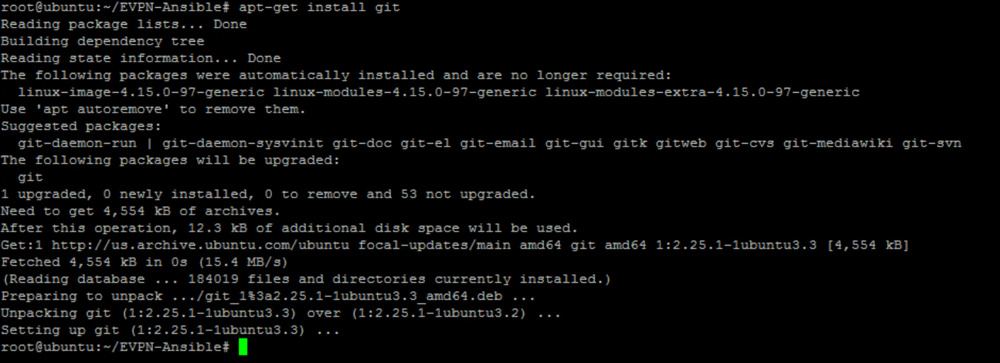
- On the Ansible node (in MTPuTTy SSH session), run the below
curlcommand to download and run a shell script that adds the official GitLab repository required for runner installation:
curl -L https://packages.gitlab.com/install/repositories/runner/gitlab-runner/script.deb.sh | sudo bash
Below screenshot shows the execution of the command

- On the Ansible node (in MTPuTTy SSH session), run the below command to install
gitlab-runner
apt-get install gitlab-runner
Below screenshot shows the output of above command:

!!! Note You may see installation of newer version of gitlab-runner.
Step 3: GitLab repository setup
In this step, you will use setup repository for your respective Pod on Gitlab (SaaS) and then push your code (Ansible files) to this repository. This basically uses Version Control System (VCS) capabilities on GitLab. In addition, some GitLab settings will be modified to allow access rights to the repository.
-
Open chrome browser and enter gitlab.com/users/sign_in in the address bar. Sign in with Username:
lab.ciscolive@gmail.comPassword:C1sco12345as shown below.
-
After signing to
lab.ciscolivegitlab account, You may see a main page without any existing projects - this is shown in below screenshot. To create a new project click on Create a project icon on this main page (shown below).
!!! Note
After signing in to gitlab account you may see list of Projects (such as POD_{ID}). The reason is that a single GitLab account (lab.ciscolive) is shared among all the attendees/pods. Hence after logging into GitLab, you may also see projects already created by others in this lab. If this is the case, click on New Project button on the right pane. And you will see Create new Project page.
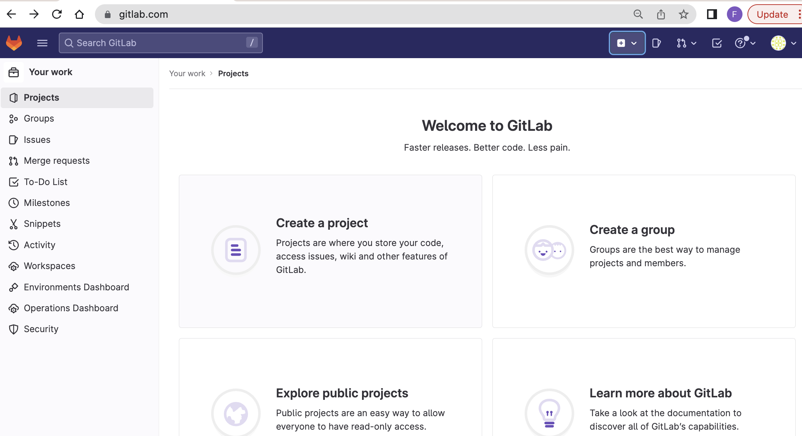
-
On the next page, click on Create a blank project.
-
On the next page, enter Project name of your assigned as
POD_{ID}. Note: In the below screenshot of this page:- You must replace the
{ID}with your respective pod number. Find your assigned POD_ID from table in Task1 Project slugis automatically populated- Leave the default setting of
Visibility LeveltoPrivate - Leave the default setting of
Initialize repository with a READMEwithcheckboxselected to automatically addREADMEfile in git repository
- You must replace the
!!! Note
You must replace {ID} with your respective pod number. Project name of POD_1 is shown as an example only.
Below screenshot shows execution of above for Pod_1 as a reference only:
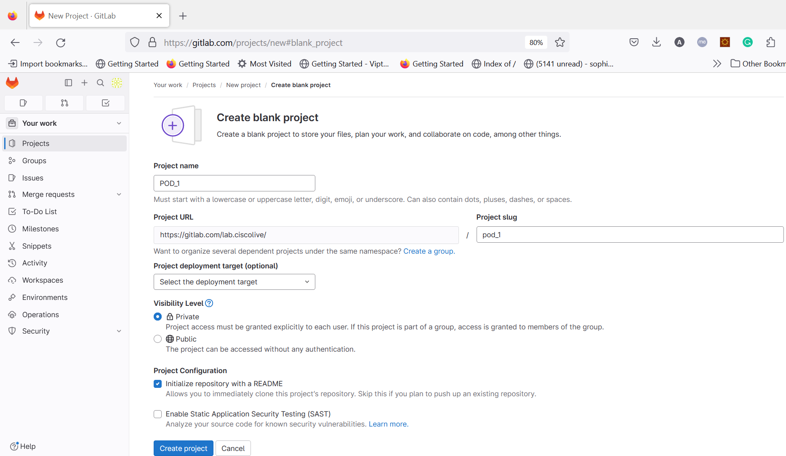
- Then click Create project at the bottom of this
Create a blank projectpage.
A new project for your respective Pod is now created on GitLab.
- On the project page, copy the project url by clicking on Clone button, and then click
Copy URLicon next to Clone with HTTPS as shown below in below screenshot. This project url will be used in next step. The project url looks like https://gitlab.com/lab.ciscolive/pod_{ID}.git.
!!! Note
You must replace {ID} with your respective pod number.
The screenshot below uses POD_1 as example.

By default the main branch is protected branch. In order to add and commit files from git command, the branch settings need to be changed to unprotected. This change of main branch to unprotected is performed as per below steps and shown in below screenshot:
- Navigate on left sidebar (pane) and Select Settings > Repository.
- Then on right pane next to Protected branches, Click Expand.
- Further, Click on Unprotect (in Red color) as shown in below screenshot. Also, acknolwedge by clicking on Unprotect branch on the pop-up message.

Now the Git repository is setup properly for colloboration. And it can be used for keeping all the code i.e., Ansible playbooks and roles files. Since all the code resides on local machine (Ansible node), so let's push this code to this newlly created centralized repository on GitLab.
- On the Ansible node (in MTputty SSH session), run the below commands to initialize git in appropriate directory:
cd ~/EVPN-Ansible
git init
Below screenshot shows the execution of the initialize commands in correct directory:
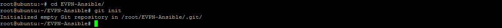
- On the Ansible node, run following commands to add the remote repository (previously copied from
Clone with HTTPSon GitLab) as origin for your respectivePod {ID}and verify it's result:
git remote add origin https://gitlab.com/lab.ciscolive/pod_{ID}.git
git remote -v
!!! Note
You must replace {ID} with your respective pod number.
Below screenshot shows the execution of the above commands for Pod_1 (as an example):
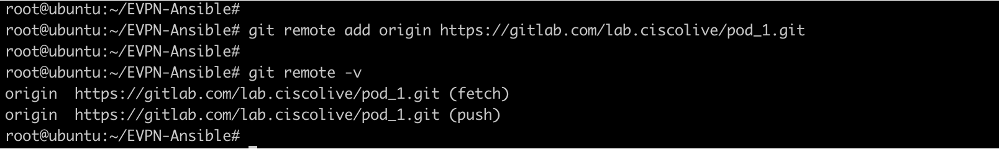
- Then to add all the files (Ansible playbooks, roles etc) to the staging area and check the status by using below commands:
git add .
git status
Below screenshot shows the execution of the above commands:

- Next, commit the files to local repository by executing below commands:
git checkout -b main
git commit -m "initial commit"
- Now, lets push all files to main branch on Gitlab repository (SaaS) with below commands. When prompted for credentials, enter the Username:
lab.ciscolivePassword:C1sco12345
git push -f origin main
Below screenshot shows output of the above command for pod_1 as an example:
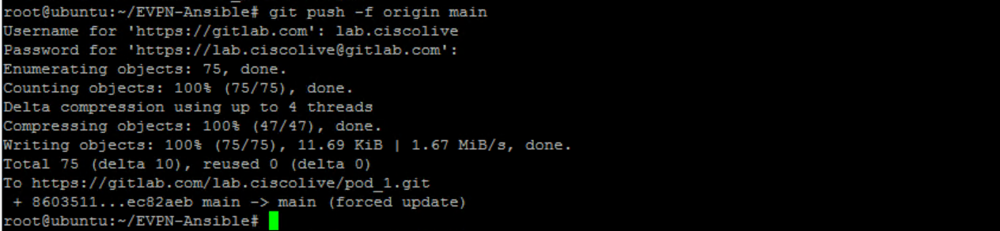
Now all your ansible code (playbooks, roles etc files) are pushed to your GitLab repository. You can check the contents on web browser by going back to URL for your respective pod repository https://gitlab.com/lab.ciscolive/pod_{ID}. You must replace {ID} with your respective pod number.
Step 4: Add CI/CD pipeline file
Now that our repository and all the content is setup properly, we will create a pipeline file to perform specific actions (i.e., run Ansible playbook in our case). Further, we will also define rules that will trigger (i.e., run) this pipeline based upon certain conditions.
In this step, you will create CI/CD pipeline file. Gitlab uses a special file named .gitlab-ci.yml for CI/CD configuration.
!!! Note
The filename starts with . and it's not a mistake.
This file uses YAML syntax and needs to be placed in root directory of the repository. In this file, you define your intent for the pipeline using a declarative syntax (in YAML) such as:
- The stages you want run in the pipeline
- The scripts you want run in each stage
- The runner you want use for each script
- How is the runner triggered for each script
Pipeline file can be added from GitLab UI using pipeline file editor, or create it locally and then push to GitLab repo using git commands. We will use the latter option i.e., create this file locally and then push it GitLab repository. We will use Atom to create this pipeline file.
-
Switch to "Atom" application on your remote desktop. Right click on the folder EVPN-Ansible and Click New File to create a new file named .gitlab-ci.yml
-
In the
.gitlab-ci.ymlfile enter the contents shown below:
stages:
- test
- staging
- production
verify:
stage: test
tags:
- EVPN
script:
- ansible-playbook jinja2_fabric.yml --check
rules:
- if: '$CI_PIPELINE_SOURCE == "push" && $CI_COMMIT_BRANCH != "main"'
staging:
stage: staging
tags:
- EVPN
script:
- ansible-playbook jinja2_fabric.yml
- ansible-playbook nxos_fabric.yml
- ansible-playbook verify_fabric.yml
artifacts:
paths:
- overlay.txt
- underlay.txt
rules:
- if: '$CI_PIPELINE_SOURCE == "push" && $CI_COMMIT_BRANCH != "main"'
deploy:
stage: production
tags:
- EVPN
script:
- ansible-playbook jinja2_fabric.yml
- ansible-playbook nxos_fabric.yml
rules:
- if: '$CI_PIPELINE_SOURCE == "merge_request_event"'
when: manual
Below screenshot shows the file after adding the above contents on Atom:

- From Atom, go to File > Save to push the new pipeline to Ansible node
Note, in the above pipeline file, you have configured
-
Three stages for pipeline named test, staging and production
-
In test stage, pipeline will perform dry-run for the Ansible playbook using shell command (
ansible-playbookwith--checkflag). This is executed by using a git-runner withtagofEVPN. Further, as per therulessetting, the script will be triggered by change in anybranchother thanmain. -
In staging stage, pipeline will run mutliple playbooks to add new VNIs on the BGP EVPN fabric. For manual verification, this stage also collects the output of show commands in multiple files - these are referred to as
artifacts. Further, as per therulessetting, this scripts will be triggered after success ofteststage and for anybranchother thanmain. -
In production stage, pipeline will run playbook to deploy EVPN fabric for new VNIs in production. Further, as per the
rulessetting, this script will be triggered after merge to main branch with manual trigger.
Now lets push this file to GitLab centralized repository by execution of below steps:
- Switch to Ansible node (via MTPuTTY), add the
.gitlab-ci.ymlfile to staging area, and then commit & push the file to remote repository (on GitLab) as shown below. When prompted for credentials, enter the Username:lab.ciscolivePassword:C1sco12345for GitLab access:
git add .gitlab-ci.yml
git commit -m "add ci file"
git push origin main
Below screenshot shows the outputs of the commands for Pod_1 (note your git repository will be based upon your respective Pod_{ID}):

Step 5: Register local gitlab-runner
We are ready to run our pipeline. However the pipeline is run by a gitlab-runner. And this runner needs to be registerted to GitLab (SaaS). In this task, you will create local GitLab runner on Ansible server and then register it to your project on GitLab (SaaS) to run pipeline jobs. You will assign EVPN as tag of the runner as part of registration to your project on GitLab.
- Switch to Chrome brower with gitlab project page. From the navigation menu on the left sidebar, Select Settings > CI/CD. Then on the right pane for the
Runners, click on Expand setting as shown in below screenshot.
!!! Note Screenshot below uses POD 1 as example, find your assigned POD ID from table in task1.

- After expanding the
Runnerssetting, underProject runnersclick on New project runner.
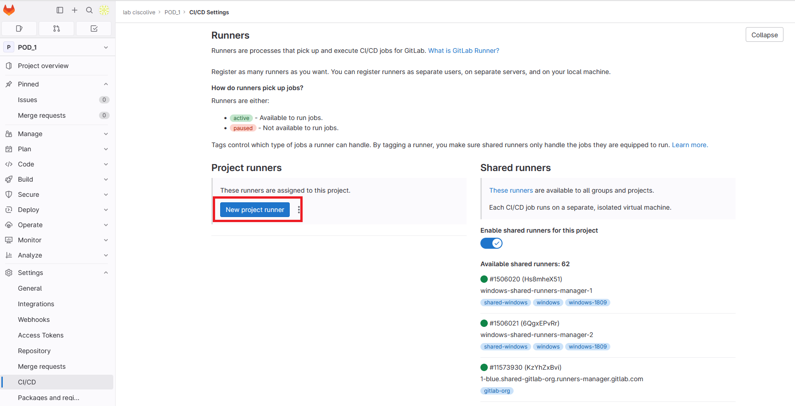
- On the next
New project runnerpage, select Linux Operating systems under thePlatform. Further, enter aTagsvalue of EVPN, leave other settings as default, and click Submit on this page as shown in below screenshot:
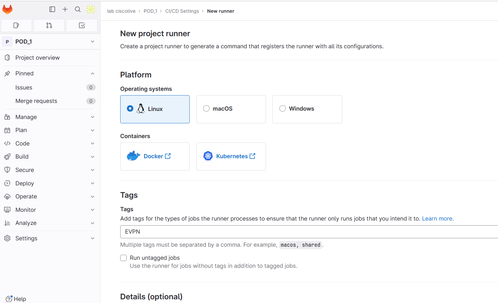
- On the next
Register runnerpage, underStep 1, copy the runner token as part of the command line (gitlab-runner register ...) . This token will be used later to register the gitlab runner that runs on Ansible server/node.
!!! Note Make sure to copy the runner token in this step.
- Then click on Go to runners page button. If
Leave site?prompt is displayed, then clickLeaveto proceed.
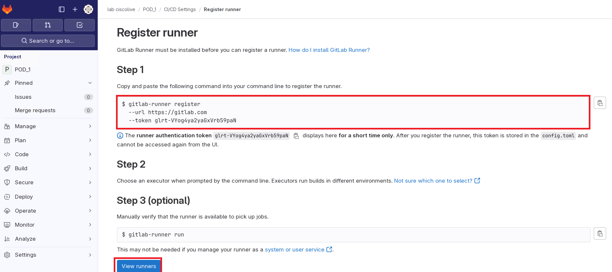
- As shown in below screenshot, under
Shared runners, click on the toggle switch named Enable shared runners for this project to disable the shared runners for this project. Below screenshot shows the output once sharing has been disabled.
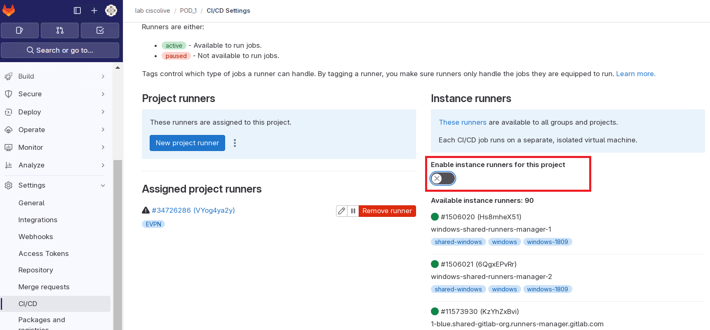
-
Next switch to Ansible node (in MTputty SSH session) to register the GitLab runner by issuing the below command. As part of this registration process, below settings are configured:
GitLab URLpointing to the GitLab running as SaaS.Registration Tokenfor (authentication) of runner to Gitlab project.Tags- When a CI/CD job runs, it knows which runner to use by looking at the assigned tags. It allows to filter a runner from a list of available runners for a job. In this lab only a single runner is used.Executor: It determines the environment where the job runs in. In this case Ansible playbooks are executed on ashellenviornment.
gitlab-runner register
When prompted provide the runner registration info as shown below:
-
Enter the GitLab instance URL:https://gitlab.com/ -
Enter the registration token:Paste therunner tokenvalue generated and copied on GitHub (previous step) -
Enter a name for the runner:EVPN -
Enter an executor:shell
After entering shell, wait few seconds for the registration of the runner. Below screenshot shows the outputs of the commands:
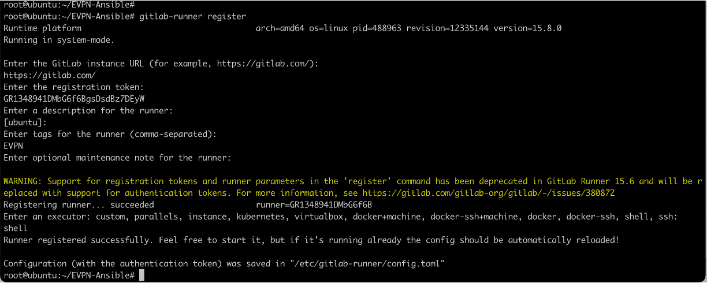
- On the Ansible node (in MTputty SSH session), run command the below commands to check status of runner:
gitlab-runner status
gitlab-runner list
Below screenshots shown the output of above commands

Step 6: Add new VNIs in Staging and trigger pipeline
In this task, you will modify the variable files to add new networks on the EVPN fabric. Instead of applying the changes (new VNIs) directly to main repository, you will create a new repository named newvni on gitlab to validate and test it on a staging environment. Once the changes (new VNIs) are pushed to newvni branch on the GitLab repository, it will automatically trigger execution of scripts, by gitlab runner, as per configuration of pipleline file (.gitlab-ci.yml). Keep in mind that we only have one physical environment i.e., same set of switches are used for both staging and production.
- Switch to "Atom". Under EVPN-Ansible, scroll to roles > jinja2_leaf > vars and open "main.yml" file. Enter the new VNI details in this file below the existing L2VNI list as shown in the below screenshot:
- { vlan_id: 200, vni: 50200, ip_add: 172.21.200.1, mask: 24, vlan_name: L2-VNI-200-Tenant1, mcast: 239.0.0.200 }
- { vlan_id: 201, vni: 50201, ip_add: 172.21.201.1, mask: 24, vlan_name: L2-VNI-201-Tenant1, mcast: 239.0.0.201 }
!!! Note Do not completely replace existing content in this file. Above content should be added to the end of existing L2VNI and above the existing L3VNI variables.
Below screenshot shows the file after addition of above contents on Atom:

-
From Atom, go to File > Save to push the new variables to Ansible node.
-
Next, variables for Leaf role will be added. From "Atom", open "main.yml" file under roles > leaf > vars. Enter following new VNI informtion under L2VNI as shown in below screenshot:
- { vlan_id: 200, vni: 50200, ip_add: 172.21.200.1, mask: 24, vlan_name: L2-VNI-200-Tenant1, mcast: 239.0.0.200 }
- { vlan_id: 201, vni: 50201, ip_add: 172.21.201.1, mask: 24, vlan_name: L2-VNI-201-Tenant1, mcast: 239.0.0.201 }
!!! Note Do not completely replace existing content in this file. Above content should be added to the end of existing L2VNI and above the existing L3VNI variables.
Below screenshot shows the file after addition of above contents on Atom:

-
From Atom, go to File > Save to push the new leaf variable file to Ansible node.
-
On the Ansible node (in MTputty SSH session), change directory to EVPN-Ansible project folder
cd ~/EVPN-Ansible
- Run the following git commands to create new branch newvni,
committhe updated variable files to that new branch andpushto Gitlab project:
git branch -m newvni
git add .
git commit -m "newvni"
git push -f origin newvni
When prompted, Use username: of lab.ciscolive and password: C1sco12345 for gitlab access
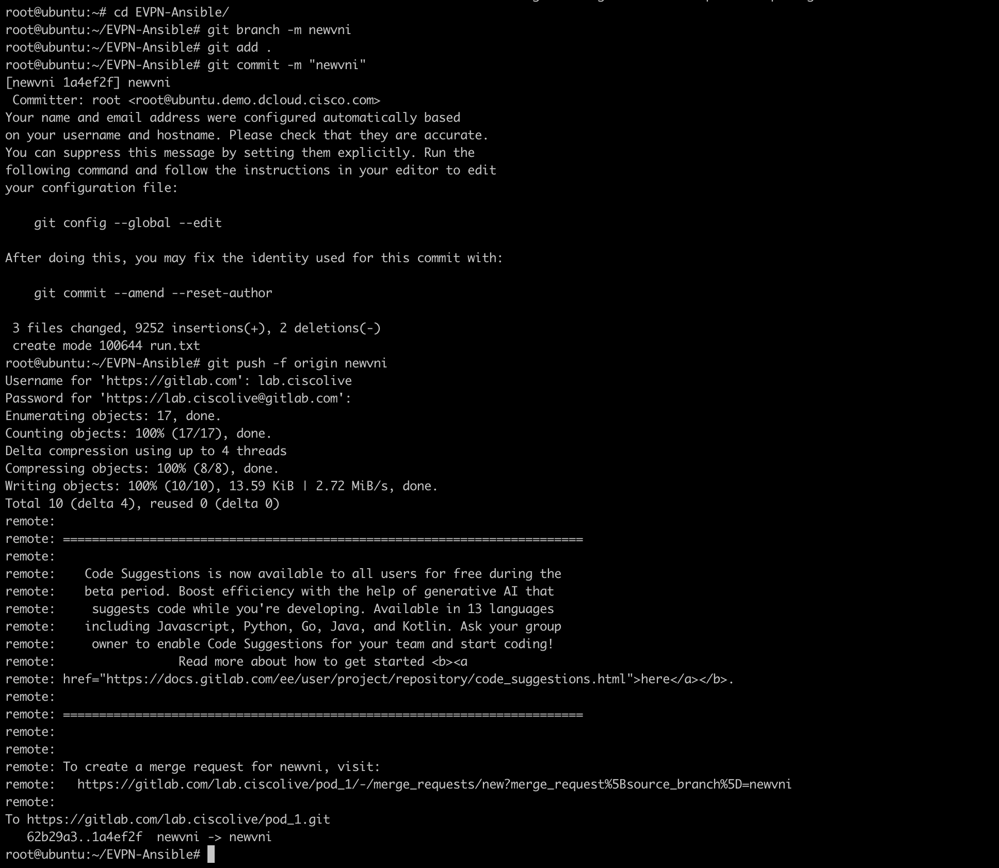
Step 7: Review pipeline testing and staging results
In this task, you will review the script results from pipeline. The git push command in previous task triggered pipeline test and staging stage.
- Switch to Chrome brower with GitLab project page. On the navigation menu on left side, select Build > Pipelines as shown below:

- Wait for the jobs finish, you can also access the runner console by clicking on any of the stage under Stages heading/column on this page and view the Job details as shown below:

- After both pipeline stages are passed, you can verify the result from the artifacts. Click on the down arrow on the right most of the
pipelinepage and select Download artifacts to download thestaging:archiveas zip file.

-
Unzip the downloaded artifacts.zip on your remote desktop, and you will see overlay.txt and underlay.txt files - these are the outputs from the ansible playbook.
-
Review the
overlay.txtfile and you can see new VNIs 50200 and 50201 deployed on staging environment as shown in partial output below:
- - 'Codes: CP - Control Plane DP - Data Plane '
- ' UC - Unconfigured SA - Suppress ARP '
- ' SU - Suppress Unknown Unicast'
- ' '
- Interface VNI Multicast-group State Mode Type [BD/VRF] Flags
- '--------- -------- ----------------- ----- ---- ------------------ -----'
- 'nve1 50140 239.0.0.140 Up CP L2 [140] '
- 'nve1 50141 239.0.0.141 Up CP L2 [141] '
- 'nve1 50200 239.0.0.200 Up CP L2 [200] '
- 'nve1 50201 239.0.0.201 Up CP L2 [201] '
- 'nve1 50203 239.0.0.203 Up CP L2 [203] '
- 'nve1 50204 239.0.0.204 Up CP L2 [204] '
- nve1 50999 n/a Up CP L3 [Tenant-1]
- - 'Interface Peer-IP State LearnType Uptime Router-Mac '
- '--------- --------------- ----- --------- -------- -----------------'
- nve1 192.168.0.18 Up CP 1d15h 000c.2997.621c
- - IP Route Table for VRF "Tenant-1"
- '''*'' denotes best ucast next-hop'
- '''**'' denotes best mcast next-hop'
- '''[x/y]'' denotes [preference/metric]'
- '''%<string>'' in via output denotes VRF <string>'
- ''
- '172.21.140.0/24, ubest/mbest: 1/0, attached'
- ' *via 172.21.140.1, Vlan140, [0/0], 1d15h, direct'
- '172.21.140.1/32, ubest/mbest: 1/0, attached'
- ' *via 172.21.140.1, Vlan140, [0/0], 1d15h, local'
- '172.21.140.10/32, ubest/mbest: 1/0'
- ' *via 192.168.0.18%default, [200/0], 1d13h, bgp-65000, internal, tag 65000
(evpn) segid: 50999 tunnelid: 0xc0a80012 encap: VXLAN'
- ' '
- '172.21.141.0/24, ubest/mbest: 1/0, attached'
- ' *via 172.21.141.1, Vlan141, [0/0], 1d15h, direct'
- '172.21.141.1/32, ubest/mbest: 1/0, attached'
- ' *via 172.21.141.1, Vlan141, [0/0], 1d15h, local'
- '172.21.200.0/24, ubest/mbest: 1/0, attached'
- ' *via 172.21.200.1, Vlan200, [0/0], 1d15h, direct'
- '172.21.200.1/32, ubest/mbest: 1/0, attached'
- ' *via 172.21.200.1, Vlan200, [0/0], 1d15h, local'
- '172.21.201.0/24, ubest/mbest: 1/0, attached'
- ' *via 172.21.201.1, Vlan201, [0/0], 1d15h, direct'
- '172.21.201.1/32, ubest/mbest: 1/0, attached'
- ' *via 172.21.201.1, Vlan201, [0/0], 1d15h, local'
- '172.21.203.0/24, ubest/mbest: 1/0, attached'
- ' *via 172.21.203.1, Vlan203, [0/0], 1d13h, direct'
- '172.21.203.1/32, ubest/mbest: 1/0, attached'
- ' *via 172.21.203.1, Vlan203, [0/0], 1d13h, local'
- '172.21.204.0/24, ubest/mbest: 1/0, attached'
- ' *via 172.21.204.1, Vlan204, [0/0], 1d13h, direct'
- '172.21.204.1/32, ubest/mbest: 1/0, attached'
- ' *via 172.21.204.1, Vlan204, [0/0], 1d13h, local'
[output omitted]
Step 8: Merge code to main branch
After reviewing the test result from staging environment, you confirmed the new NVIs are deployed properly, you will merge the newvni branch to main branch and deploy the new VNIs on production environment.
Typically in real world there will (should!) be separate environments for staging and production. In this lab, we are using same inventory for staging and production environments for simplicity purposes. So once the merge is done then the changes can be rolled out to production (by applying ansible playbooks).
- Switch to Chrome browser with GitLab project page for your respective
Pod_{ID}and then select Merge requests in the left sidebar. Select New merge request on the right pane as shown in below screenshot.
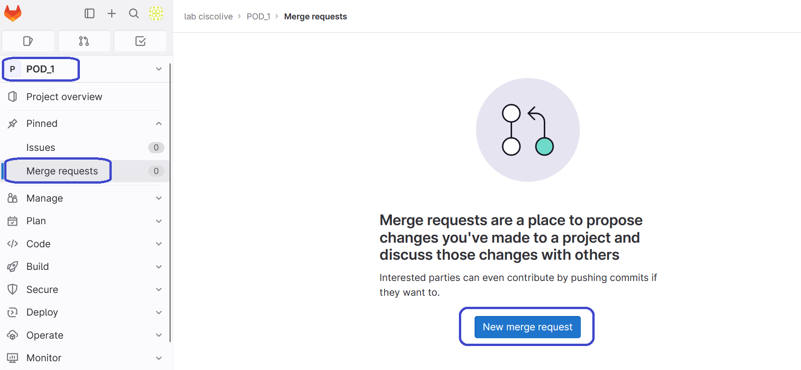
- Under the
Source branchsection, from theSelect source branchdrop down menu select newvni branch. - Further, on the
Target branchsection, underSelect target branchdrop down menu make sure that main branch is selected as shown in the screenshot below.
!!! Note Below screenshot uses POD 1 as example, you must use your assigned POD ID from table in task1.
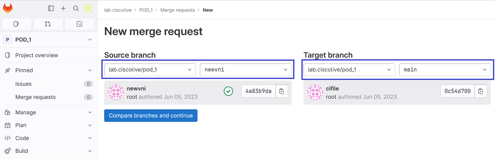
- Then click Compare branches and continue on this page.
Next, On the New merge request page (below screenshot):
-
Enter the
Titlefor the merge request as Newvni Pod_#(replace#with your respective Pod ID), -
And un-check the Delete source branch when merge request is accepted,
-
Then click the Create merge request button as shown in the screenshot below:
!!! Note
You must replace {ID} with your respective pod number. Project name of POD_1 in below screenshot is shown as an example only.

On the next page (below screenshot), you are displayed with the details related to Merge:
- Review the details and then click on Merge button.
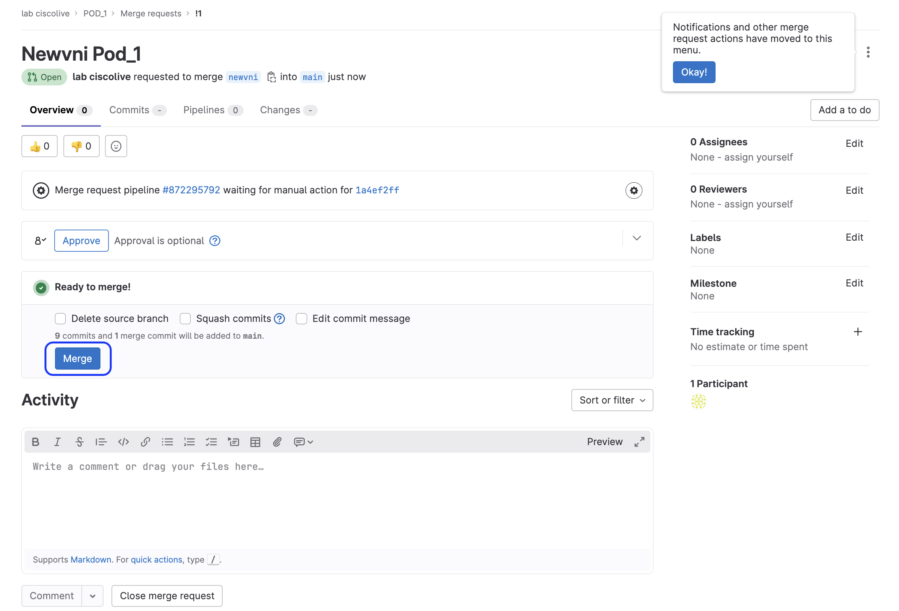
Wait for the Merged by lab.ciscolive message and for Merge details to appear on this page.
So what is happening?
After validating and testing deployment of VNIs in a branch named newvni, we have merged the new code (to deploy new VNIs) on the main branch. However, the pipeline has not triggered. Why? Since, as per the CI/CD pipeline (filename: .gitlab-ci.yml) the rules setting was configured for manual trigger for production deployment. This is just to demonstrate that, as per your environment, you may decide to be extra cautios and not deploy to production without additional review. Hence the job for deploying production will not be triggered automatically. Instead, you will manually kickoff the production deployment job on pipeline. Let's proceed to initiate this manual trigger:
-
Switch to Chrome brower with GitLab project page (your respective
Pod_{ID}), select Build > Pipelines from navigation menu on the left sidebar. -
Deploy the changes to production enviroment by selecting on the
Playbutton and then click on deploy as shown in the screenshot below:

- Wait for the job (all the Stages) to finish. You can also access the runner console output, to see execution of Ansible playbooks by clicking the pipeline stage named
deployunder Stages on this page.
!!! Note
POD_1 in below screenshot is shown as an example only. You must browse through to your own Pod #.
Below screenshot shows the successful execution of this deploy stage: